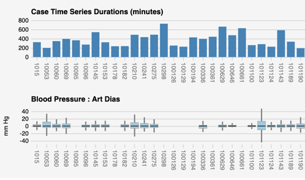
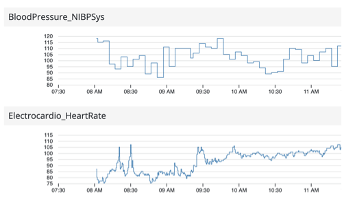
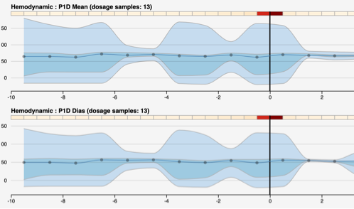
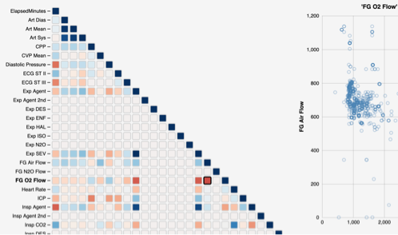
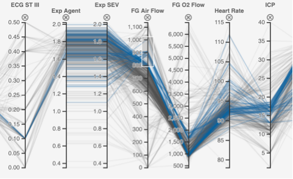

Case Summary Vis showing statistical summaries for multiple case files.

Time Stacks shows events and vitals time series in stacked time series charts.

Event Summary shows statistical summary of vitals for time windows around specific events.

Correlation Matrix showing all pair wise correlations between variables.

Parallel Coordinates shows a multivariate visualization to explore correlation patterns.